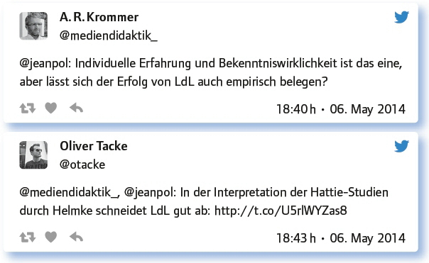

von Urs Henning
„Lernen durch Lehren“ wurde in den 1980er-Jahren vom Eichstätter Französisch-Didaktiker Jean-Pol Martin entwickelt (https://jeanpol.wordpress.com/). Nun ist diese Unterrichtsmethode als Thema für den #EDchatDE gewählt worden. Jean-Pol Martin hat den folgenden einleitenden Text verfasst und die damit verbundenen Links zur Vorbereitung auf den Chat bereitgestellt. Er hat auch mitdiskutiert.
„Lernen durch Lehren“ (LdL) geht davon aus, dass Menschen danach streben, Lerninhalte selbstständig zu verstehen, in handliche Wissenspakete zu schnüren und weiterzuvermitteln. Die Aufgabe des Lehrers ist es, anspruchsvolle Inhalte anzubieten und für eine Situation zu sorgen, die den oben beschriebenen Prozess ermöglicht. Im üblichen Klassenunterricht gelingt es, indem der Lernstoff in kleinen Portionen auf alle Schüler verteilt wird. Die einzelnen Arbeitsgruppen didaktisieren ihre Abschnitte und vermitteln sie ihren Mitschülern. Seit dem Web 2.0 ist das Klassenzimmer zur Cloud ausgeweitet und sowohl die Fülle der zu bearbeitenden Inhalte als auch die Didaktisierungstechniken sind spektakulär angestiegen. Jeder wird zum Lerner/Lehrer. Allerdings funktioniert das nur, wenn der Ausgangssatz (die Prämisse) stimmt. Will der Mensch wirklich Lerninhalte verstehen und weiterleiten?“
LdL – Worüber sprechen wir heute Abend: Was gehört für dich zu LdL dazu? Was weißt du über LdL?
Erstaunlich viele Teilgeber dieses #EDchatDEs hatten sich schon über LdL informiert oder haben sogar Erfahrung mit LdL:
Wenn du mehr über LdL erfahren willst, ist es vielleicht eine gute Idee, hier reinzuschauen: http://t.co/edA05DwP2D.
Moderieren. Mal die Ruder aus der Hand geben – und lieber den Takt schlagen. Schüler begeistern durch Integration.
Ich praktiziere LdL mit meinen Schülern, so oft es geht. Die Kenntnisse darüber habe ich durch Learning-by-Doing erhalten.
It is a really flip of the classroom. You sit in the back and students make the lesson. No video-flip.
Pupils take role of the teacher – for a limited part of the curriculum, with support from the teacher. They research and inspire.
Vorbereitung und Nachbereitung findet zu Hause statt. Die Schüler = Lehrer leiten vernetztes Arbeiten und Denken im Unterricht an.
Ich bin via Twitter über die Methode „gestolpert“. Klingt hochinteressant auch für Naturwissenschaften, da es dort oft Verständnisprobleme gibt.
Pupils teaching from pupils’ point of view may make understanding for the peers easier.
Like asking kids to do research and create a tutorial that will help other kids or peer tutoring.
Schüler referieren über Schulbuchinhalte als Abi-Training (LdL 1.0)!
In manchen Fächern mag LdL ja funktionieren, in meinem aber nicht! Oder doch? Wie?
Die Teilgeber stimmten darin überein, dass sich LdL in allen Fächern und auf allen Lernstufen einsetzen lässt. Wichtig ist die hohe Motivation der Lernenden, sich intensiv um die Lerninhalte zu bemühen, um dann selbst die Rolle der Lehrenden zu übernehmen.
LdL funktioniert in allen Fächern. Willkommen im Leben! Jean-Pol gibt ja schon viele Beispiele für unterschiedliche Fächer.
Fächer gibt’s in der Erwachsenenbildung nicht, eher Themen und Topics. Es funktioniert immer, LdL fördert die Motivation.
Ich habe bislang Erfahrungen in Deutsch, Rechtschreibung und Grammatik (sehr gut) und Geschichte, Schüler gestalten Stunden zu unterschiedlichen Themen (noch besser).
Dass Lernen Lehren und Lehren Lernen erfordert und erleichtert, hat mit dem Fach wohl wenig zu tun.
Ich habe LdL bereits in Deutsch und Religion eingesetzt.
Hier eine LdL-Schulstunde (Mathematik) mit Erich Hammer: http://t.co/0u7EyHkuJ8/ via @dunkelmunkel.
Ich habe die Methode „Aktives Plenum“ eingesetzt. Ich dachte, das funktioniert nie. Jetzt bin ich begeistert und erkenne das Potenzial meiner SuS.
Es braucht den Mut, dass es auch mal „schief“ gehen kann, und die entsprechende Fehlerkultur.
Wie können die digitalen Medien LdL unterstützen? Wir wollen konkrete Beispiele und Links!
Durch transparente und vernetzte Arbeitsweise auf einem Wiki. Dies fördert die selbstständige Arbeit: http://t.co/kWlkieOxgs
Das Projekt „KAS-Junior Expert“ ist für mich „Best Practice Beispiel“. Mehr Infos sind hier zu finden: http://t.co/pfrlq0BvHd. Be a maker not a taker.
Schüler drehen Lehrvideos. Ein Beispiel (Mathe) ist der @DorFuchs, binomische Formeln: http://t.co/HLMkfsAtcG
Sorry, allgemeine Antwort: bei kollaborativer Vorbereitung des SuS-Unterrichts, Präsentation (mit Backchannel), Dokumentation.
Welche Aufgaben muss der Lehrer bei LdL im Klassenzimmer übernehmen?
Hier sind sich die Teilgeber einig: Der Lehrer sollte die Methode einführen und sich dann zurücknehmen und im Hintergrund bleiben. Dennoch muss er sehr gut vorbereitet und präsent sein. Er hat die Aufgabe, die Schüler zu motivieren und kontrolliertes Scheitern hinzunehmen bzw. auch einen neuen Versuch anzuregen.
Sich zurücknehmen. Fehler korrigieren, die die Schüler nicht selbst finden.
Der „Lehrer“ muss sehr gut vorbereitet sein und alle fehlenden Infos zur Verfügung stellen (können).
Support pupils in preparation of lesson (if necessary) and also during lesson (correct, encourage). No fear of interfering :-).
Für mich vor allem: Den eigenen Rededrang gnadenlos unterdrücken und die Schüler auch in eine Sackgasse laufen lassen :-).
Aufgaben-Idee/Frage erklären, Arbeitswege anbieten. Andocken ermöglichen aus eigenem Erfahrungshorizont. Kompetenzen nutzen.
The teacher must encourage, motivate, keep track and be very present in the background.
Für didaktische Variation vonseiten der Schüler sorgen.
Kontrolliertes Scheitern ermöglichen und für einen neuen Versuch Feedback geben und motivieren.
Erreichen des Ziels verantworten, steuernde Impulse geben (wenn nötig), den roten Faden nachträglich aufzeigen …
Lehrer müssen die Methode einführen und anleiten.
Den SuS das Vertrauen vermitteln, dass das psychologisch und technisch klappt.
Kommunikationsprozess unter Schülern beobachten, unterstützen, ggf. Lernhilfen anbieten, pointieren/zuspitzen, Rolle des Advocatus Diaboli übernehmen.
Stoff auswählen und aufteilen. Später Impulse geben und beraten. Auch eingreifen und ergänzen.
Wie verschieben sich die Aufgaben des Lehrers, wenn er die digitalen Medien in den LdL-Unterricht einbezieht?
Hier werden unterschiedliche Aspekte genannt: Einmal können Informationen aus dem Netz abgerufen werden, aber auch Inhalte im Netz bereitgestellt werden.
Bringt denn dieses LdL wirklich was? Plötzlich sollen die Schüler Experten sein? Wir sind doch die Experten!
Hier wird betont, dass die Lehrer als Experten die Schüler unterstützen können, selbst Experten zu werden. Auch wird darauf hingewiesen, dass die Methode die Schüler schnell zu Experten macht und hierbei wichtige Schlüsselkompetenzen für Beruf und Studium erlernt werden.
„Because“ we are the experts, we can help pupils to teach their peers, after thorough preparation.
Experten sind nur als Pädagogen gefragt: http://t.co/HYpW3jw1uO
Diese Frage müsste man mal empirisch untersuchen. Da helfen keine subjektiven Bekenntniswirklichkeiten, sondern nur Fakten.
Schüler werden im Nu zu Experten oder sind es bereits: Ressourcenorientierung
Schüler können meist mehr, als wir Lehrer ihnen zutrauen. Das „Loslassen„ ist nicht ganz einfach, aber lohnenswert!
Den SuS kann es bei der Selbstverwirklichung und bei der Entwicklung der eigenen Persönlichkeit helfen! (Maslow)
Die hier eingesetzten Kompetenzen wie Planungsfähigkeit, Teamfähigkeit, Zuverlässigkeit, Moderierfähigkeit sind Schlüsselkompetenzen für Studium und Wirtschaft.
Expertenmonopole sind vorbei. LdL ist im Netz doch schon Alltag: Wie bringen wir das in die analoge Schule?
Hier gehen die Meinungen auseinander:
Den Schülern ihre Wissens-, Welt- und Kulturzugangsgeräte nicht verbieten, sondern im Klassenraum für LdL-Szenarien nutzen.
Einfach machen. Die SuS fordern es dann auch in anderen Fächern ein …
Ganz schön gewagte These. Nur weil im Netz viel kommuniziert wird, wird nicht unbedingt viel gelernt.
Wenn es z. B. „fertige“ Videos auf Youtube oder Podcasts zum Thema gibt, diese nutzen und vorschlagen, dort zu suchen!
SchülerInnen werden im Bereich Web 2.0 und Neue Medien für die Lehrerweiterbildung eingesetzt.
Es kam noch die Frage auf, ob sich der Lernerfolg bei LdL emprisch belegen lässt.

Welche Anregungen, Anmerkungen, Fragen hast du sonst noch zum Thema?
Spannender, umfassender Pearltree von Marc Schakinnis: http://t.co/4OkIelFYHT
Es ist hoch interessant, zu beobachten, wie ernst SuS eine selbst gestaltete Stunde angehen. Nicht zu vergleichen mit einem Referat!
Habe mal was über LdL geschrieben, u. a. das hier http://t.co/sXxvcEZhjQ
Helmke analysiert Hattie und stellt fest: LdL steht als Methode der Zukunft ganz oben.
Ein Vortrag von Dr. Joachim Grzega als Einführung in LdL: https://t.co/d6gACBXjZb
Fazit:
LdL unterstützt die Fähigkeit zu planen, zuverlässig im Team zu arbeiten und zu moderieren. Dies sind alles Schlüsselkompetenzen für Studium und Beruf. LdL steht als Methode der Zukunft ganz oben.
Vermehrt wurde in diesem #EDchatDE auch auf den ldlmooc hingewiesen, der unter dem Motto von Rosa Luxemburg stand: „Man lernt am schnellsten und besten, indem man andere lehrt.“ Die Inhalte sind auch jetzt noch zugänglich: http://ldlmooc.blogspot.ch/p/vorbereitung.html
Weitere Chats zum Thema:
„Lehrer oder Lernbegleiter: Kontrollverlust als Programm?“ #EDchatDE Nr. 89 #Summer- Special vom 28.7.2015: https://wiki.andrespang.de/index.php?title=EDchatDE_Archiv_2015#Tweetprotokoll_zum_28.7.15_-_89._.23EDchatDE_.23SummerSpecial_.E2.80.9ELehrer_oder_Lernbegleiter:_Kontrollverlust_als_Programm.3F.E2.80.9C
Weitere Infos zu diesem Thema finden sich hier:
Berger, Grzega, Spannagel (Herausgeber): Lernen durch Lehren im Fokus. Berichte von LdL-Einsteigern und LdL-Experten: 2011. http://www.epubli.de/shop/buch/Lernendurch-Lehren-im-Fokus-Berger-Grzega-Spannagel-Herausgeber-9783737578608/48540
Cau, Laura (Referendarin in Neumarkt/Oberpfalz): Der LdL-Blog. Lernen durch Lehren in der Praxis: https://fightforldl.wordpress.com/
Luu, Trang: Learning by teaching. Aus: Treibhäuser der Zukunft, 2004: https://www.youtube.com/watch?v=_lL8_4DHgnYhttps://www.youtube.com/watch?v=_lL8_4DHgnY
Martin, Jean-Pol: Anthropologische Voraussetzungen. Sessionsmitschnitt beim edu- camp 2014 in Frankfurt: https://www.youtube.com/watch?v=WeB8-27FYZAhttps://www.youtube.com/watch?v=WeB8-27FYZA
Martin, Jean-Pol: Jean-Pol Martins Weblog. Überblick über die wichtigsten Quellen seit 1986: https://jeanpol.wordpress.com/2014/04/30/ldl-mooc-alles-beisammen-artikel-blogs-videos/
Wikipedia: „Lernen durch Lehren“: https://de.wikipedia.org/wiki/Lernen_durch_Lehren
Link zum vollständigen Protokoll: